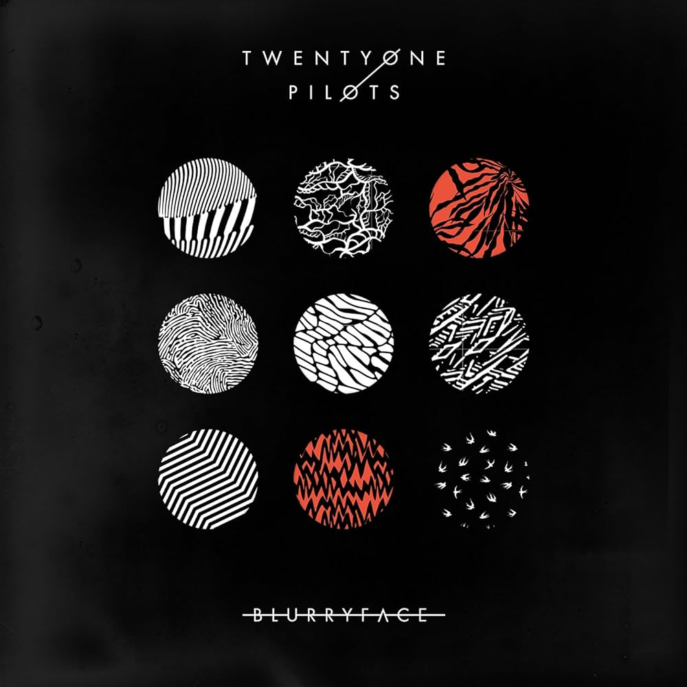

¿Quiénes son los Twenty One Pilots?
barrazas
Twenty One Pilots es un dúo musical estadounidence formado por Tyler Joseph y Josh Dun. La banda se formo en 2009 en Columbus, Ohio y desde en tonces ha ganado una base de seguidores con su música innovadora y letras profunadas.
La muisca de Twenty One Pilot es conocida por su diversidad de estilos, que van desde el Pop y el Rock hasta el Hip Hop y Electropop. Esto les ha permitido conectar con una amplia audiencia y les ha valido el reconosimiento en la industria musical.
La banda alanzó una gran popularidad con su álbum "Blurryface" en 2015, que incluye exitos como "Stresed Out" y "Ride". este álbum exploró temas como la ansiedad, la depresión y la lucha personal, conectandose profundamente con sus seguidores.
Ademas de su musica, Twenty One Pilots es conosido por sus enérgicos conciertos en vivo y su fuete conexión con sus fanaticos. Han ganado varios premios, incluidos los premios Grammy, y continúan siendo una banda de las más influyentes en la ecena musical actual:
Imagen
Audio
Todos los albumes
- Twenty One Pilots (2009)
- Regional at Best (2011)
- Vessel (2013)
- Blurryface (2015)
- Trench (2018)
- Scaled und Icy (2021)